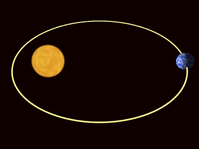

As 3 Leis de Kepler
4300156 - Gravitação
Anne Louise Scarinci
Chang, Eric, Gustavo, Ricardo
Instituto de Matemática e Estatística
Universidade de São Paulo
Quadro com as Principais Teorias até Kepler
| Platão | 428 - 347 a.C. | Geocentrismo | Universo Esférico Corruptivel x Incorrupitível |
| Aristóteles | 384 - 322 a.C. | Geocentrismo | 4 Elementos |
| Aristarco | 310 - 230 a.C. | Heliocentrismo | Fogo Central + Dimensões Relativas |
| Ptolomeu | 90 - 168 d.C. | Geocentrismo | Epiciclos |
| Copérnico | 1473 - 1543 d.C. | Heliocentrismo | De Revolutionibus Orbium Coelestium (Das Revoluções das Esferas Celetes) |
Posicionando Kepler na História

- Defensor do Modelo de Copérnico
- Discípulo de Tycho Bacho
- Influenciado por diferentes pesquisadores da época, Galileu Galilei (Observações da Luas de Júpiter) e William Gilbert (Forças Magnéticas), por exemplo
“(..) símbolo de Deus pai, fonte de luz e calor, gerador da força que move os planetas nas órbitas, e por ser o universo helicêntrico geometricamente mais simples e satisfatório”
AULA DE GEOMETRIA EM 1595
 |
Representação do desenho que inspirou Kepler a estudar as órbitas por figuras geométricas. | Razão entre os círculos eram as mesmas que as das órbitas de Saturno e Júpiter. |
 |
Modelo de Universo de Kepler do Mysterium Cosmographicum. | Sólidos pitagóricos: a órbita de Saturno é representada pela esfera mais externa; a órbita de Júpiter é representada pela esfera inscrita no cubo; a órbita de Marte é representada pela esfera inscrita no tetraedro; e assim por diante. |
TYCHO BRAHE MORRE EM 24/10/1601
|
IDEIAS PLATÔNICAS → DADOS OBTIDOS POR TYCHO ESTUDO DA ÓRBITA DE MARTE
|
 |
O SOL COMO AGENTE MOTOR
|
WILLIAM GILBERT (The Magnete): Magnetismo e Forças Magnéticas SOL: Ponto Geométrico → Força que move os Planetas IDEIA REVOLUCIONÁRIA: Sistema Planetário com Leis Próprias |
 Imagem de William Gilbert e sua teoria de que a Terra constituía-se como um grande imã que atrairia todos os corpos a sua volta. |
UM NOVO REFERENCIAL PARA ANALISAR O MOVIMENTO DA TERRA
Antes: Referencial de Observação era sempre a partir da Terra
Referencial em algum ponto da Órbita de Marte
- Descrever como seria o movimento de translação da Terra
- Constatação: Deslocamento não é Uniforme
- Cálculos: Velocidade Inversamente Proporcional à Distância
- Por Indução: TODOS OS DEMAIS PLANETAS
COMO PREVER A POSIÇÃO DE UM PLANETA?
Método: Órbita (Circular) ≡ Número Infinito de Triângulos
CONSTATAÇÃO
$\Downarrow$
O RAIO VETOR DESCREVE ÁREAS IGUAIS EM TEMPOS IGUAIS
2ª LEI DE KEPLER
A GEOMETRIA DA ÓRBITA DE MARTE
|
1º) Admitir que poderia não ser circular 2º) Tentativa: Cálculos com uma Órbita Oval 3º) Tentativa: Ideia de considerar uma Órbita Elíptica 4º) Indução para TODOS OS DEMAIS PLANETAS |
 |
CONSTATAÇÃO
$\Downarrow$
AS ÓRBITAS DOS PLANETAS SÃO ELIPSES COM A POSIÇÃO DO SOL EM UM DOS FOCOS
1ª LEI DE KEPLER
1609: Astronomia Nova
IMPLICAÇÕES IMEDIATAS:
1) O Movimento Não Uniforme X Ideia Neo-Platônica
2) Órbita Elíptica X Axioma dos Movimentos Circulares
3) O Movimento Não Uniforme + Órbita Elíptica X Galileo (Movimento Circular Uniforme e Inercial)
4) Astronomia Clássica → SISTEMA DINÂMICO
1618: Harmonia dos Mundos
Regresso à busca do Plano Divino para a Criação do Universo
“os quadrados dos períodos de revolução de dois planetas quaisquer estão entre si como os cubos de suas distâncias médias ao Sol“${T^2 \over R^3} = k$
${T^2 \over R^3} = k$
| Planeta | Período de Revolução (T) | Raio da Órbita (R) | $k = {T^2 \over R^3}$ |
|---|---|---|---|
| Mercúrio | 0,241 anos | 0,387 u.a. | 1,002 |
| Vênus | 0,615 anos | 0,723 u.a. | 1,000 |
| Terra | 1 ano | 1 u.a. | 1,000 |
| Marte | 1,8881 ano | 1,524 u.a. | 0,999 |
| Júpiter | 11,86 anos | 5,204 u.a. | 0,997 |
| Saturno | 29,6 anos | 9,58 u.a. | 0,996 |
| Urano | 83,7 anos | 19,14 u.a. | 1,000 |
| Netuno | 165,4 anos | 30,2 u.a. | 0,993 |
Qual seria o valor da constante k para o sistema Terra-Lua?
Período de revolução (T): 27,32 dias = 0,07485 anos
Raio da órbita (R): 384000 km = 0,002566 a.u.
${T^2 \over R^3} = k \Longrightarrow {(0,07485)^2 \over (0,002566)^3} = 331599,337$
| 1) Kepler: Uma das Figuras-Chave da Revolução Científica | |||
| 2) Sistema Solar: Realidade Física $\Longrightarrow$ SOL = Anima Motrix | |||
| 3) | Heliocentrismo Copernicano | LEIS DE KEPLER |
Física Newtoniana (Ciência Moderna) |
| 4) Terreno Preparado para o Princípio da Gravitação Universal | |||
Referências
1) Apostila do Curso
2) https://www.if.ufrgs.br/novocref/?contact-pergunta=aristarco-e-as-possiveis-origens-de-seu-heliocentrismo
3) VELOSO, A. J. B. Kepler e a Ciência Moderna. Dissertação de Mestrado (História e Filosofia da Ciência). CFCUL. Lisboa. 2014
4) http://www.if.ufrgs.br/fis02001/aulas/roteiro-simulacaonebrasca-leis-de-kepler.pdf